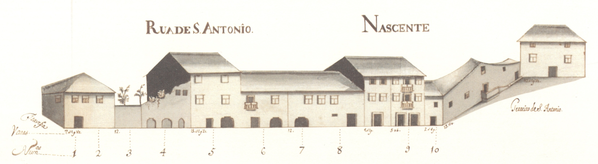

Rua de Sto. António
Informações sobre a rua:
Pequena rua, que ligava a rua das Travessas com o Terreiro de Santo António. De raiz romana,
não sabemos qual teria sido a sua função na cidade medieval.
Em 1465 são transferidos para aqui os judeus e instalados no prédio mais interessante que hoje
aqui resta, e um dos mais estimáveis de toda a cidade, passando a ser denominada de Judiaria Nova.
Esta casa veio depois a pertencer ao cónego João de Meira Carrilho, que lhe pôs as suas armas.
No final de quatrocentos, com a obrigação que os judeus sofreram de abjurar a sua religião
passou a ser chamada de Sto. António, nome que se mantém.
Das 3 casas medievais que se vêem no alçado Nascente nada resta hoje infelizmente (uma já estava
em adiantada ruína). Do lado Poente conservam-se algumas casas, ainda. É curioso notar que as suas
construções têm um tipo de acabamento e proteção de janelas bem mais cuidado que a rua que
lhe era sequente, a das Chagas.
Esta artéria, que felizmente ainda hoje conserva o seu traçado original, tinha 7 casas do lado
Nascente e 15 do Poente, sendo 6 e 11, respectivamente, prazos do Cabido.
Encontram-se unidas, num só prazo, desde o ano de 1591. Possuem frontaria para a travessa
que vem da Rua de D. Gualdim para esta rua.
Encontram-se unidas, num só prazo, desde o ano de 1524.
Encontram-se unidas, num só prazo, desde o ano de 1592.
Possui frontaria para o rossio ou terreiro de Sto. António,
com o qual confronta do sul.
Estas casas (denominadas «Casas Torres»), encontram-se unidas, num só prazo,
desde o ano de 1697. Na casa n.º 12, onde foi colocada a imagem de Sto. António,
(antes de 1502), funcionou a antiga sinagoga.
Confronta, do norte, com casa foreira ao mosteiro de Bouro.
A casa n.º 22 confronta, do norte, com a travessa que vem da Rua
de D. Gualdim.
A casa n.º 22 confronta, do norte, com a travessa que vem da Rua
de D. Gualdim.
A casa n.º 22 confronta, do norte, com a travessa que vem da Rua
de D. Gualdim.
Casas:
- Número: 1 e 2
Enfiteuta: Francisco Soares de Novais, abade de S. Vicente do Bico
Foro: 290 reis e 2 galinhas
Descrição:
- Número: 3 e 4
Enfiteuta: José da Cunda e Sousa
Foro: 1420 e 4 galinhas
Descrição:
- Número: 5
Enfiteuta: Padre Miguel de Abreu
Foro: 170 reis e 6 galinhas
Descrição: - Número: 6
Enfiteuta: Padre Miguel de Abreu
Foro: 90 reis e 2 galinhas
Descrição: - Número: 7 e 8
Enfiteuta: Francisco Gonçalves Coudo, casado com Josefa Maria Madureira
Foro: 150 reis e 4 galinhas
Descrição:
- Número: 9
Enfiteuta: Felícia Teresa, viúva de Luís de Barros
Foro: 300 reis e 2 galinhas
Descrição: - Número: 10
Enfiteuta: António Coelho, abade de S. Martinho de Alvito
Foro: 410 reis
Descrição:
- Número: 11
Enfiteuta: Os herdeiros de Miguel de Araújo Barreto, tenente
Foro: 350 reis e 2 galinhas
Descrição: - Número: 12 e 13
Enfiteuta: Agostinho Marques do Couto, cónego
Foro: 1360 reis e 4 galinhas
Descrição:
- Número: 14
Enfiteuta: Agostinho Marques do Couto, cónego
Foro: 350 reis e 2 galinhas
Descrição:
- Número: 15
Enfiteuta: Padre Agostinho de Araújo Álvares
Foro: 240 reis e 2 galinhas
Descrição: - Número: 16
Enfiteuta: Padre Agostinho de Araújo Álvares
Foro: 420 reis e 2 galinhas
Descrição: - Número: 17
Enfiteuta: Os herdeiros de João Luís Moreira, boticário
Foro: 445 reis e 2 galinhas
Descrição: - Número: 18
Enfiteuta: Os herdeiros de João Luís Moreira, boticário
Foro: 180 reis e 1 galinha
Descrição: - Número: 19
Enfiteuta: Padre Manuel de Chaves
Foro: 430 reis e 2 galinhas
Descrição: - Número: 20
Enfiteuta: António de Lima e Abreu
Foro: 220 reis e 2 galinhas
Descrição:
- Número: 21
Enfiteuta: António de Lima e Abreu
Foro: 520 reis e 2 galinhas
Descrição:
- Número: 22
Enfiteuta: António de Lima e Abreu
Foro: 440 reis e 2 galinhas
Descrição:


